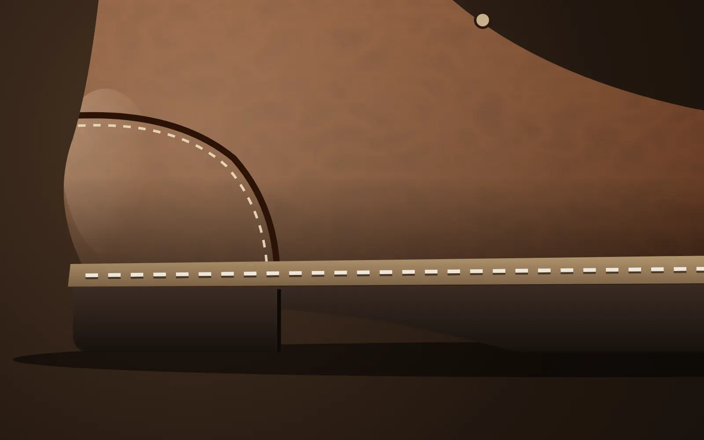
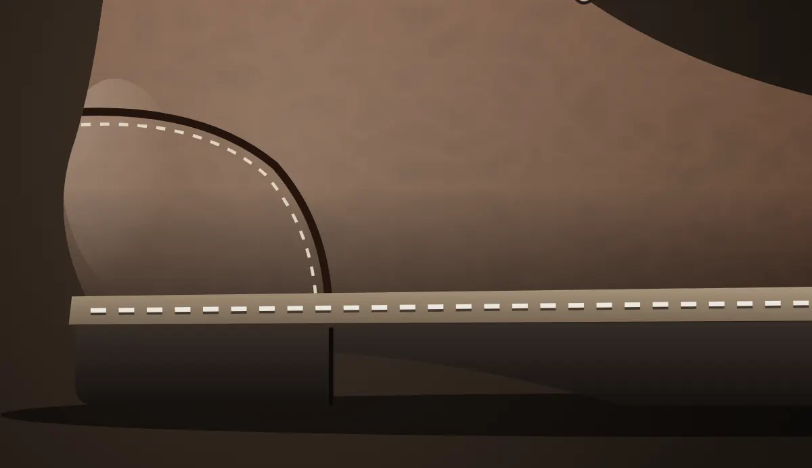
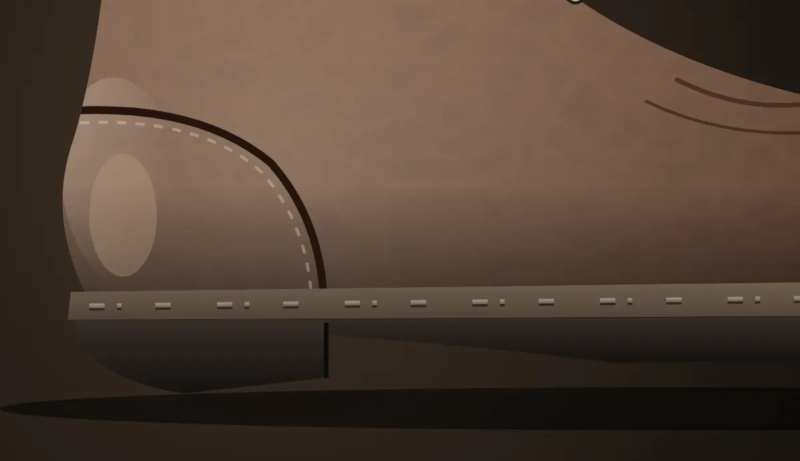

수 선 견 적 서
가죽결 수선소 · 연습용 예시 가격
그림에서 닳은 곳을 누르면
여기에 한 줄씩 적혀요.
합계0원
걸리는 날-
※ 왕복 택배비 포함. 사진을 본 뒤 달라질 수 있어요.

맡기기 전에 약속하는 세 가지
새로 사는 것과 비교하면
새 워커 대신 통창갈이를 하면 남는 돈이에요.
연습용 예시 가격이에요 (굿이어웰트 워커 한 켤레 기준).
1분 견적
어느 수선이 필요한지 몰라도 괜찮아요. 그림에서 닳은 곳만 골라 보세요.
점을 누르거나 아래에서 골라도 돼요.
가죽결 수선소 · 연습용 예시 가격
그림에서 닳은 곳을 누르면
여기에 한 줄씩 적혀요.
※ 왕복 택배비 포함. 사진을 본 뒤 달라질 수 있어요.
지웠어요.
수선 전후
가운데 손잡이를 옆으로 밀어 보세요. 왼쪽이 맡길 때, 오른쪽이 찾아갈 때예요.


설명하려고 코드로 그린 그림이에요.
맡기는 순서
자주 묻는 질문